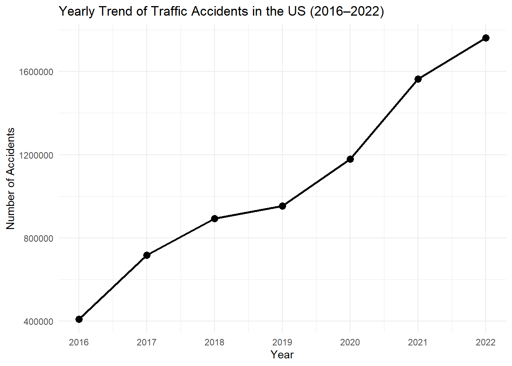
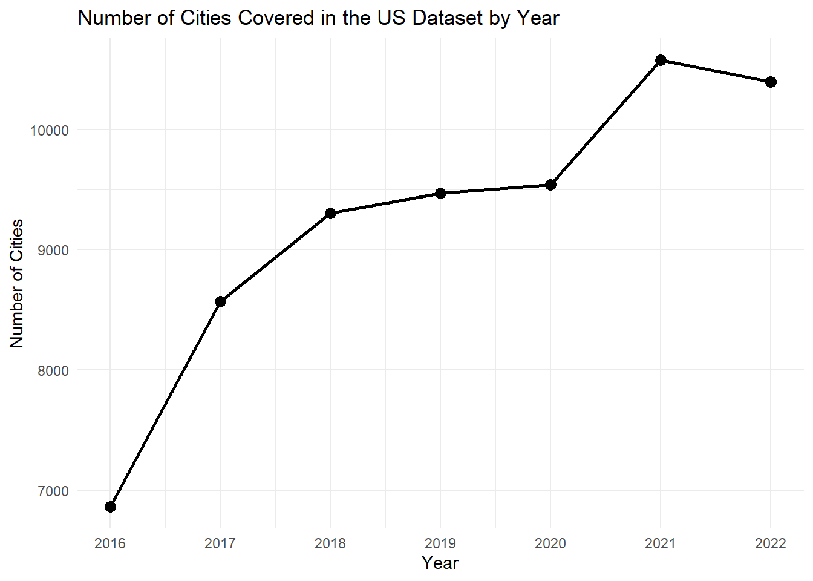
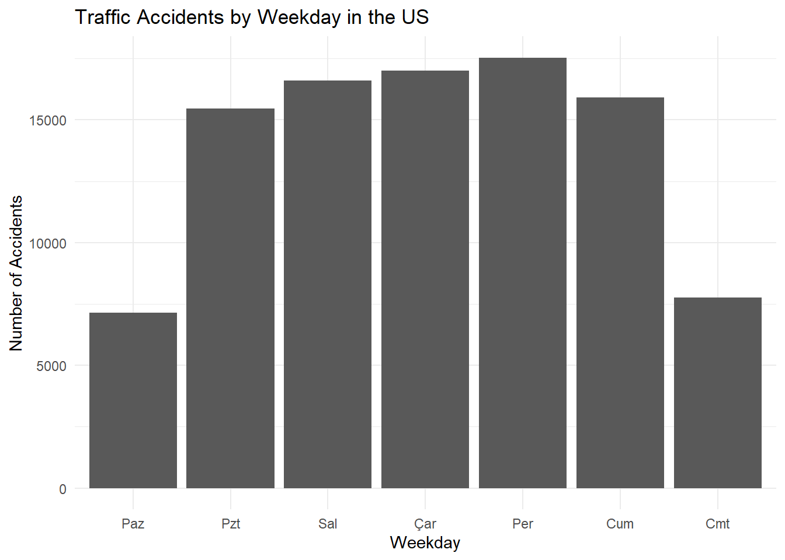
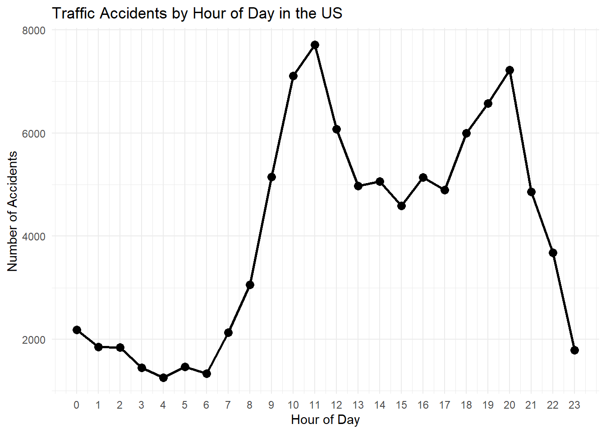
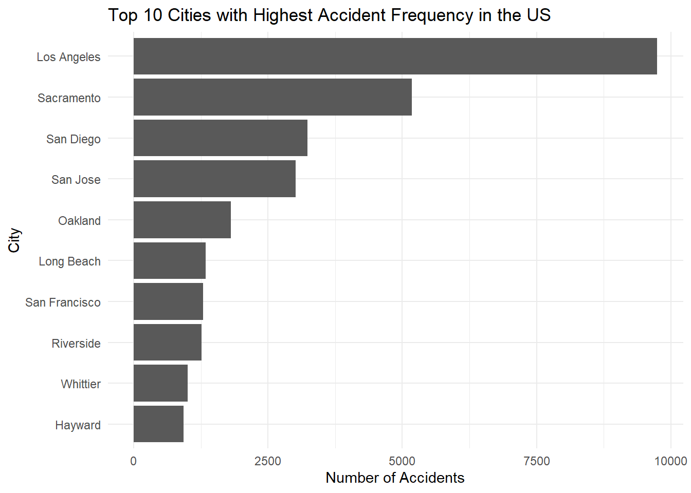
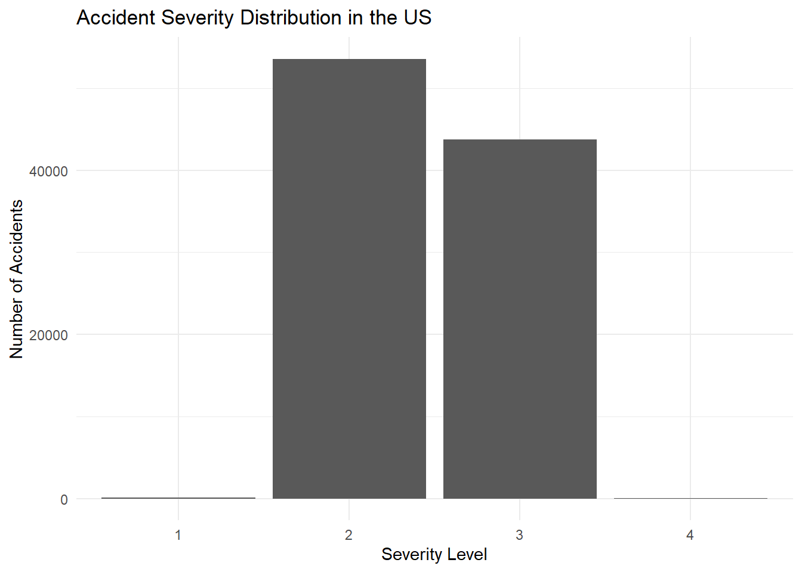
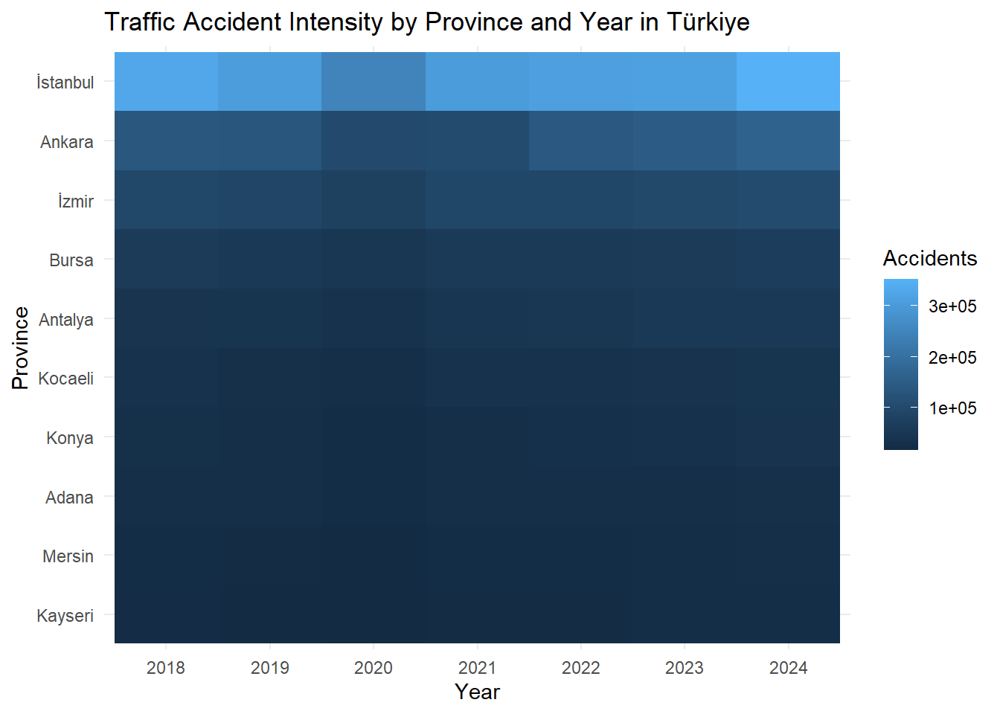
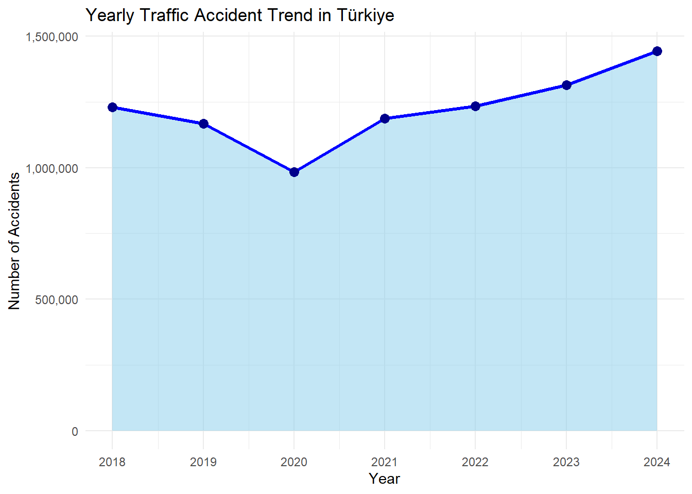
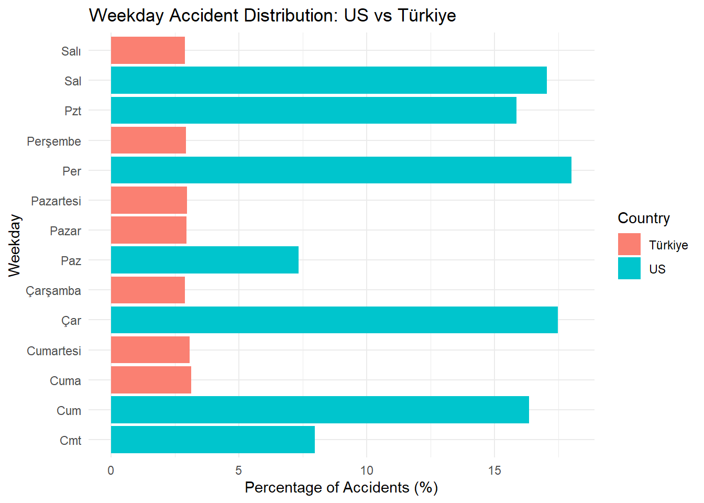

# Traffic Accident Patterns: A Comparative Analysis of US and Türkiye Traffic Data
1 Project Overview and Scope
1.1 Background
Traffic accidents are one of the major public safety problems worldwide and lead to significant human and economic losses every year. Understanding accident patterns and identifying factors associated with traffic accidents can help improve traffic safety and support better decision-making. Comparing accident data from different countries may also provide useful insights into similarities and differences in traffic behaviors and risk factors.
1.2 Problem Statement
Traffic accidents are influenced by many factors such as weather conditions, time of day, road conditions, and traffic density. However, the relationships among these factors are often difficult to understand without data analysis. This project aims to investigate traffic accident patterns and examine the factors associated with accident severity.
1.3 Objectives
The objectives of this project are:
To analyze traffic accident patterns using a large-scale traffic accident dataset from the United States
To compare accident trends between the United States and Türkiye
To identify temporal and environmental factors associated with traffic accidents
To investigate factors affecting accident severity
To provide data-driven insights for traffic safety and decision-making
1.4 Research Questions
This project aims to answer the following questions:
How do traffic accident patterns change over time?
Which environmental and temporal factors are associated with accidents?
What factors affect accident severity?
Are there similarities between traffic accident trends between the United States and Türkiye?
1.5 Scope of the Study
This study uses publicly available traffic accident datasets from the United States and Türkiye. The US accident dataset will be used for detailed exploratory analysis, while traffic statistics from Türkiye will be used to establish comparisons and identify similarities and differences in traffic accident patterns.
2 Data
2.1 Data Source
This project uses two publicly available traffic accident datasets: one from the United States and one from Türkiye. The purpose of using these datasets together is to analyze detailed accident patterns using the US dataset while establishing a comparative connection with Türkiye.
The US Accidents dataset was obtained from Kaggle and covers traffic accidents across 49 states of the United States between February 2016 and March 2023. The dataset contains approximately 7.7 million accident records collected from multiple traffic information sources such as transportation departments, law enforcement agencies, traffic cameras, and traffic sensors.
The Türkiye traffic accident data were obtained from the Turkish Statistical Institute (TÜİK). The Türkiye data consist of yearly traffic accident statistics downloaded separately and include province-level accident information and weekday-based accident summaries.
Data sources:
US Accidents Dataset: https://www.kaggle.com/datasets/sobhanmoosavi/us-accidents
The US dataset contains detailed accident-level information where each row represents a single accident event. The dataset includes variables related to accident severity, weather conditions, geographical information, and temporal characteristics.
Some important variables used in this study are:
Variable
Description
Severity
Severity level of the accident
Start_Time
Date and time of accident occurrence
Weather_Condition
Weather condition during accident
Temperature(F)
Temperature at the time of accident
Visibility(mi)
Visibility level
City
Accident city
State
Accident state
The Türkiye dataset is more aggregated and focuses on yearly traffic statistics. It is mainly used to establish a comparison with US traffic patterns.
The output above shows the dimensions of the US dataset and confirms that all yearly Türkiye datasets were successfully imported into the project.
2.3 Reason of Choice
Traffic accidents are one of the most important public safety issues worldwide because they result in injuries, fatalities, and economic losses.
The US dataset was selected because it provides highly detailed accident information and supports analyses involving accident severity, weather conditions, and temporal patterns.
The Türkiye dataset was selected to establish a country-specific context and compare general accident characteristics between the two countries.
Using both datasets together improves the practical relevance of the study while providing richer analytical opportunities.
2.4 Preprocessing
Before starting the analysis, both datasets were prepared in R. Since the US dataset contains millions of records, a sample of 100,000 observations was used during the initial analysis stage to reduce computational burden.
New names:
New names:
New names:
New names:
New names:
New names:
New names:
• `Ölü Sayısı` -> `Ölü Sayısı...5`
• `Ölü Sayısı` -> `Ölü Sayısı...6`
• `Ölü Sayısı` -> `Ölü Sayısı...7`
New names:
New names:
New names:
New names:
New names:
New names:
New names:
• `Ölü Sayısı` -> `Ölü Sayısı...3`
• `Ölü Sayısı` -> `Ölü Sayısı...4`
• `Ölü Sayısı` -> `Ölü Sayısı...5`
The outputs above show the dimensions of the processed datasets that will be used in the exploratory and comparative analysis stages.
3. Analysis
Analysis
3.1 Exploratory Data Analysis
In this section, the US accident data are explored to understand general accident patterns in terms of time, location, severity, weather conditions, and environmental factors.
3.1.1 Yearly Accident Trend in the US
Show code
us_yearly <-read_csv("data/US_Accidents_March23.csv",col_select = Start_Time,show_col_types =FALSE) %>%mutate(Year =year(Start_Time) ) %>%filter( Year <2023 ) %>%count(Year)ggplot( us_yearly,aes(x = Year,y = n )) +geom_line(linewidth =1) +geom_point(size =3) +scale_x_continuous(breaks =unique(us_yearly$Year)) +labs(title ="Yearly Trend of Traffic Accidents in the US (2016–2022)",x ="Year",y ="Number of Accidents") +theme_minimal()

The graph presents the yearly change in accident frequency across the US dataset. Records from 2023 were excluded because the dataset only contains accident data until March 2023. Including incomplete yearly data could create misleading trends.
3.1.1.1 Dataset Coverage by Year in the US
Show code
us_coverage <-read_csv("data/US_Accidents_March23.csv",col_select =c(Start_Time, State, City),show_col_types =FALSE) %>%mutate(Year =year(Start_Time) ) %>%filter( Year <2023 ) %>%group_by(Year) %>%summarise(Number_of_States =n_distinct(State),Number_of_Cities =n_distinct(City) )ggplot( us_coverage,aes(x = Year,y = Number_of_Cities )) +geom_line(linewidth =1) +geom_point(size =3) +scale_x_continuous(breaks =unique(us_coverage$Year)) +labs(title ="Number of Cities Covered in the US Dataset by Year",x ="Year",y ="Number of Cities") +theme_minimal()

The increase in accident records between 2016 and 2022 cannot be explained solely by broader geographic coverage. The number of cities represented in the dataset increased by approximately 50% during this period, whereas the number of accident records increased by nearly four times. Therefore, the increase in accident records appears to be larger than the expansion in geographic coverage alone. This suggests that both dataset expansion and actual changes in accident patterns may contribute to the observed trend.
3.1.2 Traffic Accidents by Weekday in the US
Show code
us_weekday <- us_accidents_clean %>%count(Weekday)ggplot(us_weekday, aes(x = Weekday, y = n)) +geom_col() +labs(title ="Traffic Accidents by Weekday in the US",x ="Weekday",y ="Number of Accidents" ) +theme_minimal()

The graph shows that accident frequencies differ across weekdays. Higher accident frequencies during weekdays may be associated with commuting patterns and increased traffic volume, whereas lower frequencies during weekends may reflect reduced work-related travel activity.
3.1.3 Traffic Accidents by Hour of Day in the US
Show code
us_hourly <- us_accidents_clean %>%count(Hour)ggplot(us_hourly, aes(x = Hour, y = n)) +geom_line(linewidth =1) +geom_point(size =3) +scale_x_continuous(breaks =0:23) +labs(title ="Traffic Accidents by Hour of Day in the US",x ="Hour of Day",y ="Number of Accidents" ) +theme_minimal()

The hourly distribution indicates that accident frequencies are not evenly distributed throughout the day. Peaks during morning and evening hours may be associated with commuting periods when traffic density is typically higher.
3.1.4 Top Cities with Highest Accident Frequency in the US
Show code
top_cities <- us_accidents_clean %>%count(City, sort =TRUE) %>%slice_head(n =10)ggplot(top_cities, aes(x =reorder(City, n), y = n)) +geom_col() +coord_flip() +labs(title ="Top 10 Cities with Highest Accident Frequency in the US",x ="City",y ="Number of Accidents" ) +theme_minimal()

The results indicate that accident occurrences are concentrated in specific cities. Larger metropolitan areas with higher population density and traffic volumes are expected to exhibit greater accident frequencies.
3.1.5 Accident Severity Distribution in the US
Show code
severity_distribution <- us_accidents_clean %>%count(Severity)ggplot(severity_distribution, aes(x =factor(Severity), y = n)) +geom_col() +labs(title ="Accident Severity Distribution in the US",x ="Severity Level",y ="Number of Accidents" ) +theme_minimal()

The severity distribution demonstrates that accident records are concentrated in certain severity levels. Severe accidents occur less frequently, while moderate levels appear more common within the dataset.
3.1.6 Accident Severity by Weather Condition in the US
The analysis suggests that weather conditions may influence accident severity. Different weather environments can affect road visibility and driving conditions, potentially leading to variations in accident outcomes.
3.1.7 Environmental Factors Associated with Accidents in the US
The results indicate that accidents are associated with several environmental factors such as intersections, traffic signals, and crossings. These factors may contribute to accident occurrence due to increased traffic interactions and driving complexity.
The analysis indicates that traffic signals and intersections appear more frequently in accident records during peak traffic hours. Increased vehicle interactions and traffic density during commuting periods may contribute to higher accident occurrence in these areas. Crossings also appear as an important factor, whereas railway crossings and give-way locations appear less frequently. These findings suggest that traffic signal optimization, intersection redesign, and traffic flow management strategies during peak hours may help improve traffic safety.
3.1.9 Overall Findings from US Exploratory Analysis
The exploratory analysis of US traffic accident data revealed several important patterns related to accident occurrence and severity.
First, accident frequencies showed an increasing trend between 2016 and 2022. Although part of this increase can be explained by the expansion of dataset coverage, the rise in accident counts was considerably larger than the increase in the number of represented cities. While city coverage increased by approximately 50%, accident records increased by nearly four times. This indicates that dataset expansion alone cannot fully explain the observed increase.
Second, accident occurrence was not uniformly distributed across time. Variations across weekdays and hours of the day suggest that traffic intensity and commuting behavior may influence accident frequency.
Third, accident frequencies were concentrated in specific cities, indicating that urban areas with larger populations and heavier traffic volumes tend to experience more accidents.
In addition, accident severity appeared to vary across different environmental and weather conditions. Environmental factors such as intersections, traffic signals, and crossings may also contribute to accident occurrence due to increased traffic interactions.
The peak-hour analysis further indicated that environmental conditions become more important during commuting periods. Factors such as intersections and traffic signals appear more frequently during high-traffic periods, suggesting that increased vehicle interactions may elevate accident risk. Potential improvement strategies may include optimized traffic signal timing, intersection redesign, and traffic flow management during peak hours.
Overall, the results suggest that traffic accidents are influenced by multiple factors including temporal patterns, geographical characteristics, traffic density, environmental conditions, and dataset coverage.
New names:
New names:
New names:
New names:
New names:
New names:
• `Ölü Sayısı` -> `Ölü Sayısı...5`
• `Ölü Sayısı` -> `Ölü Sayısı...6`
• `Ölü Sayısı` -> `Ölü Sayısı...7`
The graph shows the yearly change in total traffic accidents in Türkiye. The y-axis starts from zero to avoid a misleading visual impression and to show that the decrease in 2020 represents a decline, not the absence of accidents.
3.1.11 Traffic Accident Heatmap by Province and Year in Türkiye
New names:
New names:
New names:
New names:
New names:
New names:
New names:
• `Ölü Sayısı` -> `Ölü Sayısı...5`
• `Ölü Sayısı` -> `Ölü Sayısı...6`
• `Ölü Sayısı` -> `Ölü Sayısı...7`
Show code
top10 <- turkey_heat %>%group_by(Province) %>%summarise(Total=sum(Accidents))%>%arrange(desc(Total)) %>%slice_head(n=10)heat_final <- turkey_heat %>%filter(Province %in% top10$Province)ggplot(heat_final,aes(x=factor(Year),y=reorder(Province,Accidents),fill=Accidents))+geom_tile()+labs(title="Traffic Accident Intensity by Province and Year in Türkiye",x="Year",y="Province",fill="Accidents")+theme_minimal()

The heatmap illustrates how accident intensity changes across provinces and years and helps identify provinces with consistently high accident frequencies.
3.1.12 Registered Vehicles vs Traffic Accidents in Türkiye
The graph identifies provinces that deviate from the expected relationship between registered vehicles and accident counts. Provinces highlighted in red represent locations where accident frequencies differ considerably from the overall trend.
The weekday analysis indicates that fatal and injury traffic accidents are not evenly distributed across the days of the week. Friday has the highest number of accidents, whereas Sunday shows the lowest accident frequency. Higher accident counts on Fridays may be associated with increased traffic density caused by commuting activities and the beginning of weekend travel. In contrast, lower accident frequencies on Sundays may be explained by reduced traffic volume and fewer work-related trips.
In addition, accident frequencies across weekdays appear relatively similar, suggesting that traffic accidents occur consistently throughout the week rather than being concentrated on a single day. However, the relatively higher accident frequency on Fridays indicates that certain periods may involve increased traffic risk and therefore require additional traffic monitoring and preventive measures. Traffic authorities may consider increasing traffic monitoring and implementing preventive measures during high-risk days such as Fridays.
3.1.14 Overall Findings from Türkiye Exploratory Analysis
The exploratory analysis of Türkiye traffic accident data reveals several important patterns. First, the yearly accident trend shows how total traffic accidents changed over time. This helps evaluate whether accident frequency increased or decreased across the selected years.
Second, accident records are concentrated in specific provinces. Provinces with higher population density, vehicle ownership, and traffic volume tend to show higher accident frequencies.
The relationship between registered vehicles and traffic accidents suggests that provinces with more registered vehicles generally experience more accidents. This indicates that traffic exposure is an important factor in accident occurrence.
The weekday analysis shows that fatal and injury accidents are not evenly distributed across days of the week. Differences between weekdays may be related to commuting patterns, work-related travel, and changes in traffic volume.
Overall, the Türkiye analysis suggests that traffic accidents are affected by multiple factors such as vehicle density, provincial traffic volume, travel behavior, and temporal patterns. Possible improvement strategies include improving road infrastructure in high-risk provinces, monitoring risky weekdays, strengthening traffic safety awareness, and developing targeted traffic control policies.
3.2 Trend Analysis
3.2.1 Yearly Accident Trend in Türkiye
Show code
library(scales)ggplot( turkey_yearly,aes(x = Year,y = Total_Accidents ))+geom_area(fill="skyblue",alpha=0.5)+geom_line(color="blue",linewidth=1.2)+geom_point(color="darkblue",size=3)+scale_y_continuous(labels = comma)+scale_x_continuous(breaks=2018:2024)+labs(title="Yearly Traffic Accident Trend in Türkiye",x="Year",y="Number of Accidents")+theme_minimal()

The graph illustrates yearly changes in traffic accident frequency in Türkiye. A noticeable decrease appears around 2020, followed by a continuous increase in later years.
3.2.2 Weekday Distribution: US vs Türkiye
Show code
us_weekday_compare <- us_accidents_clean %>%count(Weekday) %>%rename(Count=n) %>%mutate(Country="US")turkey_weekday_compare <- turkey_weekday_clean %>%mutate(Country="Türkiye",Count=Fatal_Injury_Accidents) %>%select(Weekday,Count,Country)weekday_compare <-bind_rows(us_weekday_compare,turkey_weekday_compare) %>%group_by(Country) %>%mutate(Percent=Count/sum(Count)*100) %>%ungroup()ggplot(weekday_compare,aes(x=Weekday,y=Percent,fill=Country))+geom_col(position="dodge")+coord_flip()+scale_fill_manual(values=c("US"="turquoise3","Türkiye"="salmon"))+labs(title="Weekday Accident Distribution: US vs Türkiye",x="Weekday",y="Percentage of Accidents (%)",fill="Country")+theme_minimal()

The graph compares accident distributions between the US and Türkiye using percentages rather than raw counts.
3.2.3 Summary Comparison of US and Türkiye
Analysis Dimension
US Dataset
Türkiye Dataset
Main Finding
Yearly Trend
✓
✓
Accident frequencies change over time
Weekday Pattern
✓
✓
Accidents vary across weekdays
Hourly Pattern
✓
✗
Peak-hour analyses possible only for US
Weather Conditions
✓
✗
Weather effects analyzed only in US
Environmental Factors
✓
✗
Traffic signals/intersections available only for US
Vehicle Ownership
✗
✓
Positive relationship with accidents
3.2.4 Overall Findings from Trend Analysis
The trend analysis reveals that traffic accident patterns vary over time and across different conditions. The yearly analysis in Türkiye demonstrated noticeable changes across years, including a decrease around 2020 followed by an increasing trend in subsequent years.
The weekday comparison showed that accident frequencies are not equally distributed throughout the week in both countries. These variations may be associated with commuting behavior, traffic density, and mobility patterns.
Although the two datasets differ in content and level of detail, both analyses suggest that traffic accidents are influenced by temporal factors rather than occurring randomly. Understanding these trends may support the development of more effective traffic safety policies and prevention strategies.
3.3 Model Fitting
To further investigate the relationship between registered vehicles and traffic accidents in Türkiye, a simple linear regression model was applied. The objective of the model was to examine whether changes in the number of registered vehicles are associated with changes in accident frequencies.
The regression model can be expressed as:
[ Y=_0+_1X+ ]
where:
(Y) = Number of traffic accidents
(X) = Number of registered vehicles
(_0) = Intercept
(_1) = Regression coefficient
() = Random error term
The fitted model indicated a positive relationship between registered vehicles and accident frequencies. In general, provinces with larger numbers of registered vehicles tended to experience more traffic accidents.
However, several provinces deviated considerably from the fitted regression line. These observations suggest that vehicle ownership alone cannot completely explain accident frequencies. Additional factors such as population density, infrastructure quality, traffic conditions, and driving behavior may also contribute to accident occurrence.
Overall, the regression model provides useful insights into accident patterns and highlights the importance of considering multiple variables when explaining traffic accidents.
3.4 Results
The analysis provided several important findings regarding traffic accident patterns in both the US and Türkiye datasets.
First, accident frequencies showed temporal variations across years, weekdays, and traffic conditions. The yearly analyses demonstrated that accident occurrences changed over time rather than remaining constant.
Second, environmental and traffic-related factors appeared to influence accident occurrence. The peak-hour analysis indicated that traffic signals and intersections were frequently associated with accidents, suggesting that increased vehicle interaction may contribute to higher accident risks.
Third, the Türkiye analysis revealed a positive relationship between registered vehicles and accident frequencies. Provinces with larger vehicle populations generally experienced higher numbers of accidents.
However, the presence of several provinces deviating from the expected regression trend indicated that vehicle ownership alone cannot fully explain accident occurrence. Additional factors such as infrastructure quality, population density, traffic management practices, and driver behavior may also affect accident frequencies.
Overall, the results suggest that traffic accidents are affected by multiple interacting factors rather than a single variable.
4. Results and Key Takeaways
The comparative analysis of traffic accident data from the US and Türkiye provided useful insights into accident patterns and potential contributing factors.
The findings showed that accident occurrence is influenced by temporal characteristics such as years, weekdays, and commuting patterns. Traffic accidents were not uniformly distributed over time, indicating that mobility behavior and traffic intensity play important roles.
The analyses also demonstrated that environmental conditions and traffic characteristics can contribute to accident risk. Traffic signals, intersections, and peak-hour conditions appeared to be associated with higher accident frequencies.
Furthermore, the relationship between vehicle ownership and accident frequency suggested that increased traffic exposure may increase accident risk. However, deviations from expected trends highlighted that traffic accidents are complex events influenced by many additional variables.
Based on these findings, several practical recommendations can be suggested:
Increase traffic monitoring during high-risk periods.
Improve traffic signal optimization and intersection design.
Strengthen traffic safety awareness programs.
Improve road infrastructure in high-risk areas.
Develop data-driven traffic management policies.
Overall, understanding accident patterns through data analysis can support more effective decision-making and contribute to improved traffic safety.